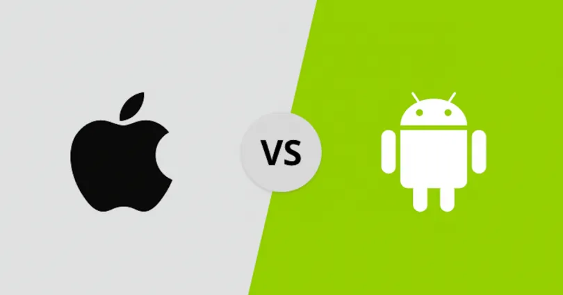
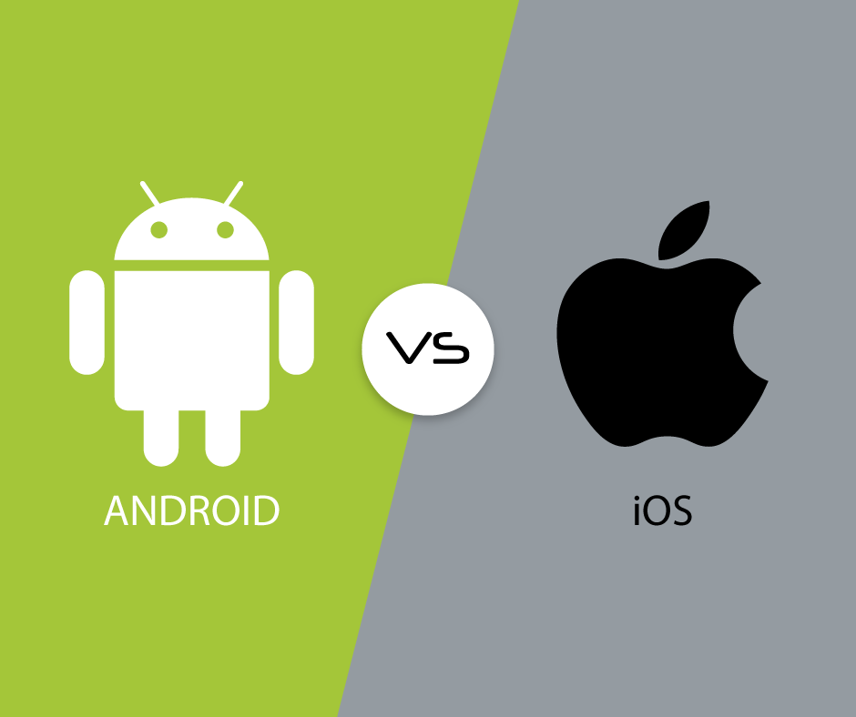

Ventajas de iOS frente a los contras de Android:
El rendimiento de un dispositivo iPad o iPhone por lo general parece más fluido que algunos dispositivos con Android. Esto se debe a que iOS solo es exclusivo para los dispositivos de Apple, mientras que Android se debe adaptar a multitud de marchas y modelos muy diferentes (aunque hay algunos dispositivos optimizados).
El registro de actualizaciones de iOS es mejor que en Android, ya que si no es un Nexus, las actualizaciones pueden hacerse esperar o tener que buscarte la vida para actualizar tu terminal con la última versión de Android. Algo que no pasa con iOS que lleva sus actualizaciones a todos los dispositivos de forma más inmediata.
Las apps de la App Store de Apple suelen tener un aspecto más limpio y bonito que las apps de Android por lo general. Esto no quiere decir que las apps de Android sean peores, ya que soy usuario de Android y no tengo demasiadas objeciones al respecto.
Copias de seguridad con iCloud. La nube de Apple ayuda a guardar mejor tus datos, apps y todo lo necesario para tener un backup. En Android, aunque con las cuentas de Google se puede guardar ciertos contenidos, no todo es posible mantenerlo a salvo…

Ventajas de Android frente a los contras de iOS:
Limitaciones en cuanto a proveedores de hardware y software. Igualmente iOS es un sistema más cerrado.
Se pueden usar tarjetas SD en la mayoría de terminales con Android para poder ampliar la capacidad de almacenamiento si es necesario, algo que en los de Apple es imposible.
La batería se puede retirar en la mayoría de los dispositivos Android, mientras que en los iPhone y en las iPad no es posible, algo que a mi particularmente me incomoda a pesar de no ser algo crítico…
Aunque he dicho antes que iCloud representa un medio mejor de copias de seguridad, también decir que existen muchas apps para Android para hacer backups, mientras que la libertad de elección en Apple es más limitada (iTunes, iCloud,…), aunque si estás dispuesto a realizar Jailbreak hay otras opciones en los iDispositivos.
Los widgets son otro dato a destacar, aunque yo no los suelo usar mucho, quizás otros usuarios sí los echen en falta en el otro sistema.
